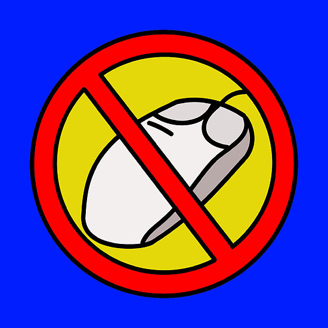
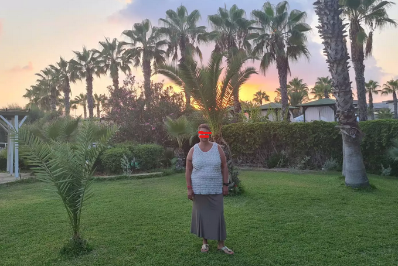

3 Textualitätskriterien
3.1 Textualitätsbegriff
Was versteht man unter Textualität?
Textualität (oder auch: Texthaftigkeit) ist die Gesamtheit der wesenhaften Merkmale von Texten. Textualität (oder Textur) kann sich aber auch auf den Text als Gebilde (als Produkt) beziehen.
Vertextung ist ein Begriff, mit dem man sich auf den Textproduktions- oder rezeptionsprozess (Textaufbau, Textbildung oder Textkonstitution) bezieht.
In welchen Fällen liegt nach Ihrer derzeitigen Auffassung ein Text vor?
- Nicht-Texte oder Texte an der Grenze?


Welche Eigenschaften machen Texte spezifisch, so dass Sie nicht beliebig füreinander austauschbar sind und eine verschiedene Interpretation (z.b. hinsichtlich ihres Zwecks oder kommunikativen Funktion) notwendig machen?

Ich bin 50 Jahre, 172 groß und paar kg mehr. Ich suche einen Ehrlichen, Treuen, Zufährlässlichen Partner (keine Affären oder Ons) Er sollte 50 bis 58 sein. Bitte nur ernstgemeinte Anfragen.
Brigitte
Standort 1110 Wien, Simmering
Ad-ID: 263214
Zuletzt aktualisiert: 18.09.2022 14:55
Merkel-Porträt aus dem Jahr 2000 Das eiserne Mädchen Wer das Geheimnis von Angela Merkel ergründen will, muss mit ihr von Krisensitzung zu Krisensitzung ziehen und dorthin gehen, wo sie herkommt. Eine preisgekrönte Reportage aus dem Jahr 2000, wiederentdeckt zum 70. SPIEGEL-Geburtstag. Von Alexander Osang 28.01.2017, 07.55 Uhr
Manchmal muss sie noch mal zurück in diese Stadt, die so gut passt zu Kohls Ehrenwort, zu Weyrauchs verrostetem Garagentor, zu Leisler Kieps Einstecktuch, zu Kanthers Frisur, noch mal zurück in dieses Bonner Konrad-Adenauer-Haus, wo man einen dieser Siebziger-Jahre-Sexfilme drehen könnte, ohne ein einziges Möbelstück zu verrücken. Nach der Pressekonferenz will sie schnell weg, schnell nach Berlin, der Rückflug ist ausgebucht, alle sind in der Maschine, nur sie steht noch im Warteraum und telefoniert. Sie weiß, in einer Stunde, in Berlin, kann alles anders sein. Sie hört, dass Kohl heute abend im Fernsehen spricht. Sie schaltet ihr Handy ab und sagt leise: “Er schlägt zurück. Heute schlägt er zurück.”
Am Abend sieht Angela Merkel Helmut Kohl im Fernsehen. Sie ist zu Besuch bei Freunden und fragt, ob die was dagegen haben. Nein, denn Kohl gucken gehört inzwischen dazu. Es ist spannend. Kohl marschiert in das ZDF-Studio wie ein General. Thomas Bellut vom ZDF knallt die Hacken zusammen. Er fragt nach Angela Merkel.
Er sei nicht hierher gekommen, um über Angela Merkel zu reden, sagt Kohl. Und dann redet er. Wie ein betrogener Liebhaber. Oder ein enttäuschter Vater.
Die Tür öffnet sich am Rande von Templin, es ist die Tür des letzten Hauses in einer kurzen Sackgasse. Horst Kasner ist überraschend groß und überraschend aufrecht für einen 74-jährigen Pfarrer. Er trägt ein graues Cordjeans-Hemd, hat breite Schultern, aber sein linkes Auge ist trübe. Als ich anbiete, die Schuhe auszuziehen, lacht er. Man erkennt jetzt die Tochter in seinen Zügen. Auch die Art, wie er die Arme schwingt, vorfreudig irgendwie, könnte sie von ihm geerbt haben. Die Frage ist, worauf er sich freut. … …
https://www.spiegel.de/geschichte/angela-merkel-portraet-aus-dem-jahr-2000-das-eiserne-maedchen-a-1131489.html1
3.2 Konstitutive Kriterien der Textualität
Beaugrande/Dressler (1992:12ff) unterscheiden sieben konstitutive Textualitätskriterien, die bei jedem Text erfüllt sein müssen.
Textzentrierte Kriterien:
- Kohäsion
- Kohärenz.
Verwenderzentrierte Kriterien:
- Intentionalität
- Akzeptabilität
- Informativität
- Situationalität
- Intertextualität.
3.2.1 Kohäsion
Dieses Merkmal reflektiert die Zusammengehörigkeit von Oberflächeneinheiten eines Textes und beruht auf grammatischen Abhängigkeiten.
- Paul hat angerufen. Er sagt, er kommt morgen.
- A: Ich liebe dich. - B: Ich dich auch.
- Paul hat angerufen. Paul war sehr aufgeregt.
- O Grab ! o Wundergrab! dem alle Gräber weichen! …
O Grab! das einst begrub die Leiche aller Leichen!
(Ausschnitt aus Das unbegreifliche Jesusgrab von Quirinus Kuhlmann)
- Brüderchen und Schwesterchen
- Kahn kritisierte seinen Chef. Er wurde entlassen.
- Kahn kritisierte seinen Chef. Deshalb wurde er entlassen.
- Kahn kritisierte seinen Chef. Danach wurde er entlassen.
3.2.2 Kohärenz
Kohärenz = Kontinuität des Inhalts, inhaltliche Zusammengehörigkeit von Textteilen.
- Die Wetterlage in Europa hat sich in den vergangenen Tagen völlig verändert. Wie aber soll sie von wenig Geld eine Haushaltshilfe bezahlen? Allerdings will kein Meteorologe einen Pfennig darauf verwetten, daß wir nun auch von Juni an mit Sonne rechnen können.
Kohärenz: bei de Beaugrande & Dressler nur semantisch-kognitive Zusammenhänge von Texten (z .B. Kausalitäts-, Zeit- und Referenzbeziehungen).
Die Textwelt, ist ihrerseits durch eine Sinnkontinuität bestimmt: Im Gegensatz zur Bedeutung (der Fähigkeit oder des Potentials eines Ausdrucks, Wissen darzustellen oder zu übermitteln) bezeichnen die beiden Autoren mit Sinn das Wissen, das tatsächlich durch die Ausdrücke innerhalb eines Textes übermittelt wird. Die Sinnkontinuität ist Grundlage der Kohärenz. Eine solche dem Text zugrundeliegende Konstellation (d. h. die Gesamtheit der einem Text zugrundeliegenden Sinnbeziehungen) ist die Textwelt, die mit der realen Welt nicht unbedingt übereinstimmen muss. Es handelt sich vielmehr um die vom Sprecher, von seinem Wissen und seinen Intentionen zugrundegelegte Textwelt.
Konzepte sind in der Psychologie bzw. Kognitionswissenschaft angenommene Einheiten unseres Wissenssystems, die sich aufgrund von Wahrnehmung und Erfahrung dort gebildet haben und die nicht unbedingt ein getreues Abbild der realen Welt ergeben. Eine Diskrepanz zwischen der Konzept-Konstellation in der Textwelt und unserem Wissen führt dazu, dass wir keine Sinnkontinuität herstellen können. Der betreffende Text ist für uns sinnlos. Wenn Konzepte aktiviert werden, meint man damit, dass sie aus dem Langzeitgedächtnis in den aktiven Gedächtnisspeicher geladen werden.
3.2.3 Intentionalität
I. = Einstellung (Attitüde) des Textproduzenten, einen kohäsiven und kohärenten Text zu bilden, um damit Wissen zu verbreiten oder ein in einem Plan angegebenes Ziel zu erreichen.
- George W. Bush mit einem republikanischen Senator bei einer Wahlkampagne:
Widersprüche, Intentionalität als notwendiges Textualitätskriterium zu fordern (Vater 1992: 50):
(a) Intentionalität: Voraussetzung für jede Art von (bewußter) Kommunikation.
(b) Obwohl Kohärenz und Kohäsion unabhängige Kriterien sind und nicht Teil eines anderen Textualitätskriteriums sein können, verweist der Intentionalitätsbegriff auf diese beiden und macht sie zu Kriterien, die an Intentionalität gebunden sind.
(c) Äußerungskomplexe, die wir intuitiv als Texte auffassen, in denen der Textproduzent jedoch nicht Kohäsion und/oder Kohärenz intendiert. Die Inkohärenzen der in Texten vorkommenden Sprecher stört nicht die Kohärenz des Gesamttextes, sondern können sogar dazu gehören. Darin zeigt sich die Abhängigkeit des Kohärenzbegriffs von der Textsorte.
3.2.4 Akzeptabilität
A. = Einstellung des Textrezipienten, einen kohäsiven und kohärenten Text zu erwarten, der für ihn nützlich oder relevant ist. Akzeptabilität bezieht sich außerdem auf die Angemessenheit der verwendeten Sprachmittel, d. h. auf Sprachvariation im weiteren Sinne.
- Ein alltägliches Bild in den Straßen des Ruhrgebiets: eine Mutter, ein Kind und Pommes Frites. Im Büdchen an der Ecke kauft die Frau Mama eine Portion Pommes Frites.
Kind: Mamma, gib mich dat Pommes.
Mutter: Du dummer Bengel ! Dat heißt: Gib mich dat Pommes, BITTE !
Ein Hühnerzüchter schreibt an eine landwirtschaftliche Forschungsstelle:
“Es geht um meine Hühner. Jeden Tag finde ich einige von ihnen mit dem Kopf im Sand und mit den Beinen nach oben. Was ist mit ihnen los?” Nach 14 Tagen kommt die Antwort: “Ihre Hühner sind tot.”Gespräch in der Straßenbahn.
“Können Sie mir sagen, wie spät es ist?”
“Moment”, sagt der andere und zieht eine Banane aus der Tasche.
Er wirft einen Blick darauf und sagt: “Donnerstag.”
“Du lieber Himmel, da hätte ich ja an der vorigen Haltestelle Aussteigen müssen!”Ein Schweizer, ein Schwabe und ein Berliner sitzen im Zugabteil.
Der Schweizer zum Berliner: “Sind Sie schou z’Züri gsi?”
Der Berliner kann mit dem letzten Wort nichts anfangen und fragt zurück: “Gsi?”
Da greift der Schwabe hilfreich ein: “Er moint gwää.”Italiens Premier Berlusconi über die Anhänger der Opposition vor der damaligen Parlamentswahl in Italien (2006):
Einwände (Vater 1992: 52-54):
(a) Akzeptabilität: allgemeine Voraussetzung für erfolgreiches Kommunizieren.
(b) Subjektivität: für den einen akzeptabel, für den anderen dagegen nicht.
(c) Akzeptabilitätsbegriff zu eng eingegrenzt.
3.2.5 Informativität
I. = Ausmaß der Erwartetheit bzw. Unerwartetheit, Bekanntheit oder Unbekanntheit, Gewissheit oder Ungewissheit der dargebotenen Textelemente. Das richtige Maß an Informativität eines Textes ist abhängig von Intention, Erwartung und Situation.
I. = außerdem als Thematizität verstanden. Keine athematischen Texte; sprachlich sehr stark reduzierte Dialoge durch implizite Thematizität gekennzeichnet sein.
- E = m*c2
- um herauszufinden ob eine Konversation ein Gespräch oder eine Geschwätz ist, haben wir die ABC-Analyse verwendet, d.h. aufschreiben, ob wieviele wichtige Fachbegriffe vorkommen (welche Themen werden angeschnitten), wichtig hierbei ist zu schauen ob es Wörter mit Inhalt sind oder nur Plastikwörter und zum anderen die 4 Maximen von Grice. Ich hoffe das hat dich geholfen.
Einwände Vater (1992: 56): Informativitätsbegriff einschränken: Informativität sei zu definieren als das Ausmaß der Erwartetheit bzw. Unerwartetheit von Zeichen aus einem Zeicheninventar, das dem Rezipienten bekannt ist.
3.2.6 Situationalität
S. = Gesamtheit der Faktoren, die einen Text für eine kommunikative Situation relevant machen.
- Langsam spielende Kinder
- Die Morphologie-Vorlesung fällt heute aus.
Beispiel (19) nur durch situative Faktoren interpretierbar, denn grammatisch sind ist ein solcher Text oft nicht eindeutig. Beispiel (20): Erwartungen von Germanistik- und Medizinstudenten bezüglich Morphologie-Vorlesung (Knochenbau vs. Wortstruktur).
3.2.7 Intertextualität
I. = Bezug eines Textes auf andere Texte und deren Geprägtheit als Elemente einer bestimmten Textsorte bzw. Textklasse.
Intertextualität im Sinne (a), d. h. die Textsorte, ergibt sich aus einem Geflecht verschiedener Faktoren und Merkmale: Intention, Form, Situation usw.
Intertextualität im Sinne (b), d. h. der Bezug auf andere Textvorkommen, spielt in der Literatur (Belletristik) eine große Rolle: z. B. Kabarett Schwarz - weiß - tot.
3.3 Gesamtheit der Textualitätskriterien
Vater (1992: 64-66): Führt nur die Gesamtheit der Textualitätskriterien zu Textualität, um von einem “Text” sprechen zu dürfen?
- Intentionalität und Akzeptabilität sind fragwürdige Textualitätskriterien, weil sie Voraussetzung für jegliche Kommunikation sind und nicht nur sprachlicher.
- Akzeptabilität ist relativ: das gleiche sprachliche Gebilde kann von einem Textrezipienten als Text akzeptiert werden, von einem anderen dagegen nicht. Letzteres ist beispielsweise bei moderner Lyrik oft der Fall.
- Situationalität trägt zur Textualität bei, aber ist ein nicht situations-adäquates sprachliches Äußerungsgeflecht kein Text? Vater (1992: 64) scheint es in bestimmten Fällen angemessener, zu behaupten, dass jemand zwar einen Text gebildet habe, aber halt keinen situationsangemessenen Text.
- Kohäsion ist zwar wichtig und fehlt relativ selten in Texten, aber es gibt Äußerungsgeflechte, die durchaus ohne Kohäsionsmittel auskommen und dennoch kohärent sein können, denn man erkennt, dass ein Thema abgehandelt wird.
- Kohärenz stellt offenbar das dominierende Textualitätskriterium dar. Auch wenn alle anderen postulierten Kriterien nicht erfüllt sind, kann es sich um einen Text handeln - solange das Gebilde kohärent ist. Bestimmte Äußerungsgeflechte zeigen zudem, dass Kohärenzbeziehungen vom Text-Thema dominiert werden.
- Thema: eine nichtsprachliche Größe, die erst durch den Text versprachlicht wird und in einen bestimmten Wissenszusammenhang eingebettet ist. Da Textkohärenz an die Wissenssysteme des Textproduzenten und des Textrezipienten gebunden ist, erweist es sich als schwierig, die Textkohärenz zu bestimmen, und somit die Grenze zwischen Text und Nicht-Text als problematisch. Kohärenz = Eigenschaft, die an Leistungen und Urteilen von Rezipienten gebunden.
- Scherners Auffassung (1984: 148), Kohärenz aufzufächern in:
(a) textbezügliche Konsistenzbedingungen (weil “Wörter schon etwas mitbringen, bevor sie zur kommunikativen Verwendung gelangen”) und
(b) Textbenutzer-bezogene Kohärenzbedingungen. Die Konsistenzbedingungen unter (a) betreffen die semantisch–syntaktischen Regularitäten der Vertextung, die Bedingungen unter (b) “die darüber hinausgehenden Sinnerstellungsoperationen und -voraussetzungen des jeweiligen Rezipienten” Scherner (1984: 149; nach Vater 1992: 66).
Kontinuum:
Prototypische Texte <—-> Nicht-prototypische Texte
3.4 Regulative Textprinzipien
Die konstitutiven Prinzipien bestimmen und erzeugen eine natürliche Verhaltensform, die als Textkommunikation erkennbar ist. Daneben werden von de Beaugrande & Dressler (1992) aber auch regulative Prinzipien, die die Textkommunikation regeln, jedoch nicht definieren: Effizienz, Effektivität, Angemessenheit, möglicherweise noch mehrere.
3.4.1 Effizienz
Die Effizienz eines Textes steigt, wenn der Arbeitsaufwand von Textproduzent und Textrezipient bei der Textverwendung (d.h. beim Produzieren und beim Dekodieren) möglichst klein ist.
3.4.2 Effektivität
Die Effektivität eines Textes hängt davon ab, ob ein Text beim Rezipienten einen starken Eindruck hinterlässt und günstige Verhältnisse für die Erreichung eines vom Textproduzenten (und möglicherweise auch vom Textrezipienten) angestrebten Ziels schafft.
3.4.3 Angemessenheit
Die Angemessenheit eines Textes folgt aus der Art, wie die Textualitätskriterien in Wirklichkeit an die Situation angepasst sind.
Lesen Sie den Text über den Rapper Capital Bra (https://www.zdf.de/nachrichten/heute/das-phaenomen-capital-bra-100.html)! Sehen Sie sich den Video-Beitrag (mit Untertiteln an)! YouTube-Video der Sendung Germania über Capital Bra: https://www.youtube.com/watch?v=7_oNPNvjphs
Beschreiben Sie, welchen Eindruck Sie beim Lesen von der Sprache in den beiden Texten erhalten haben? Können Sie Unterschiede zwischen den beiden Texten erkennen? Wie wird gesprochen bzw. geschrieben?
Zur computergestützen Textanalyse verwenden wir nun Voyant Tools: https://voyant-tools.org/. Adresse des Tutorials: https://voyant-tools.org/docs/#!/guide/tutorial.
Wir “füttern” das Programm mit beiden Texten (ZDF-Beitrag, Untertitel zum YouTube-Video). Die Daten sollen uns bei unserer stilistischen Analyse behilflich sein.
Wir erhalten mehrere Angaben und Darstellungen von Voyant Tools: z.B.
1. Wortwolke (Cirrus): Welche (inhaltlich relevanten) Wortformen kommen im ZDF-Text am häufigsten vor, welche in den Germania-Untertiteln? Wie erklären Sie sich die Unterschiede? Schauen Sie sich auch die Trends-Darstellung an!
2. Haben Sie beim Lesen noch weitere Unterschiede in der Wortwahl bemerkt, die in den beiden Bilddarstellungen nicht sichtbar sind?
3. Dokumentlänge: Wie viele Äußerungen umfassen die beiden Texte? Welcher ist länger? Kann man den Unterschied mit Hilf der syntaktischen Einheit Satz beschreiben?
4. Wortschatzdichte (lexikalische Diversität): In welchem der beiden Texte werden mehr unterschiedliche Wortformen verwendet? In welchem der beiden werden öfters dieselben Wortformen benutzt?
5. Phrasen: Welche Wortverbindungen werden in dem einen oder anderen Text wiederholt verwendet?
6. Korrelationen2 (Zusammenhänge): Welche Wörter kommen in dem einen oder anderen Text gemeinsam vor (hohe Korrelation + Signifikanz kleiner als 0,05)?
Text (ZDF):
Das Phänomen Capital Bra - Erfolgreicher als die Beatles und Abba
Datum: 14.04.2019 15:00 Uhr
Aus Sibirien in die deutsche Hitparade: Capital Bra gilt als derzeit erfolgreichster Vertreter des Deutschraps. Einst war er provokant, doch längst ist er kommerziell erfolgreich.
Es ist ein historischer Moment, ein Stück deutscher Musikgeschichte - daran will zumindest der Hallensprecher gar keinen Zweifel aufkommen lassen. Mehr Nummer-eins-Hits als die Legenden Abba und Beatles habe der Künstler bundesweit eingesammelt, heißt es vor dem Konzert von Deutschlands derzeit wohl erfolgreichstem Rapmusiker in Mannheim. Dann kommt Vladislav Balovatsky alias Capital Bra auf die Bühne und bringt mehr als 2.000 Jugendliche zum Singen und Tanzen. Der Mann mit der Mütze ist ein Phänomen - vom "Wachwechsel im Pop" schreibt bereits das Fachmagazin "Rolling Stone".
Junge Fans
Für Capital Bra ist Mannheim die erste Station seiner Tournee, die den 24-jährigen Berliner kreuz und quer durch Deutschland führt, außerdem nach Wien und Zürich. Textsicher singen die Besucher an diesem Abend Zeile für Zeile mit, ziehen die Endvokale wie der Sänger auf der Bühne: "Weit und breit keine Gegnaaaa, komm wir wechseln das Themaaaa, ich will 22-Zoll-Rädaaaa, und die Sitze aus Ledaaaa". Die Songs ähneln einander, es geht um Aufsteigerträume und dosierte Kritik am Staat sowie um Mädchen, Mode, Maschinen. In rund 80 Minuten spielt Capital Bra seine Hits, darunter "Cherry Lady" und "Neymar".
"Das ist richtig stabil." Kai, ein Fan
Den meisten gefällt es. "Das ist richtig stabil", sagt der 17-jährige Kai aus Heidelberg. Und die 15-jährige Jana aus Karlsruhe schwärmt: "Also, ich feiere den." Fast pausenlos filmen sie abwechselnd den Musiker und sich mit dem Smartphone. Ruhelos tanzt Capital Bra, musikalisch unterstützt von einem DJ, auf der Bühne hin und her - im Dresscode der Straßengang: lässige Kleidung und Baseballcap. Auf seine Frage "Was geht ab, Bratans und Bratinas?", wie der Musiker seine Fans nennt, folgen "Capi Capi"-Sprechchöre. Es ist für die meisten der jungen Besucher eine ausgelassene Feier - und draußen wartet der Vater im Auto.
Kleinkriminelle Vergangenheit
Der in Sibirien geborene und in der Ukraine aufgewachsene Capital Bra steht für viele stellvertretend für den einst provokanten Straßenrap, der den Weg aus prekären Plattenbauten in situierte Vorstadtvillen gefunden hat. Die Musikform sei längst in der Mitte der Gesellschaft angekommen, sagt Marcus Kleiner, Professor für Medien- und Kommunikationswissenschaft an der SRH Hochschule der populären Künste Berlin. Fans seien vor allem 12- bis 25-Jährige.
Capital Bra über seine neue Heimat Deutschland
Capital Bra wurde in Sibirien geboren, ist in der Ukraine aufgewachsen - und kam mit sieben Jahren nach Deutschland. Wie das für ihn war, hat er bereits vor zwei Jahren den Kollegen von Germania erzählt - einem Format von funk, dem gemeinsamen Jugendangebot von ARD und ZDF. Deutschland sei längst seine Heimat, sagte Capital Bra damals. "Ich bin hier groß geworden, hab hier die Sprache gelernt, meine Freunde sind hier, meine Familie ist hier." Hier geht es zum ganzen Video auf YouTube.
"Bra" steht für "Brat", das russische Wort für Bruder. "Brat" heißt auch ein russischer Kultfilm über einen Außenseiter. Der Rapper, der aus der Kälte kam, zog mit sieben Jahren mit seiner Mutter nach Berlin-Hohenschönhausen und wurde durch die Veranstaltung "Rap am Mittwoch" bekannt. Der Vergleich mit Abba und den Beatles hinkt indes - im digitalen Zeitalter entstehen Hitparaden ganz anders als damals.
Der Reiz bestehe darin, dass Capital Bra aus seiner kleinkriminellen Vergangenheit und anderen kontroversen Themen aus seinem Leben kein Hehl mache und die Entwicklung vom "Bordstein zur Skyline" möglichst authentisch zu inszenieren versuche, sagt Experte Kleiner. Seinen heranwachsenden Fans vermittele der Musiker die Botschaft: "Jeder kann es schaffen." Und: "Bleib Dir treu." Damit erreiche er das für die Jugend wichtige "Empowerment" (etwa: Selbstbestimmung).
Rap in Mittelschicht längst nicht mehr verpönt
Dabei entbehrt der Erfolg eines aus Sibirien stammenden Rappers in Deutschland in diesen Tagen nicht einer gewissen Ironie. Erst vor kurzem kontrollierten in Russland Polizei und Geheimdienst Rap-Konzerte und unterbanden sie zum Teil. Rap und andere Formen der Popkultur beruhten auf drei Dingen, kritisierte Kremlchef Wladimir Putin: "Sex, Drogen und Protest." Aber eine offene Konfrontation mit der einflussreichen Subkultur vermeidet Moskaus Machtapparat bisher. Capital Bra schildere in seinen Songs zwar Gewalterfahrung, rufe aber nicht zur Gewalt auf, sagt Kleiner der Deutschen Presse-Agentur. Rap sei schon lange in der Mittelschicht nicht mehr verpönt. "Dort wird er als eine Art Verwilderungsunterhaltung konsumiert - ähnlich dem Stellvertretererlebnis beim Schauen von Thrillern oder Horrorfilmen."
Capital Bra habe kein neues Genre geschaffen, sondern sich an ein erfolgreiches Genre erfolgreich angeschlossen, betont Kleiner. Der Musiker vereine auf eine für Fans attraktive Weise Wortspiele sowie den ungefilterten Ausdruck von Gefühlen und Gedanken und dynamischem Beat, meint der 45-jährige Wissenschaftler. "Er hat einen ganz guten Flow." In der renommierten Popakademie in Mannheim ist Rap längst Unterrichtsstoff. Manche sehen den Sprechgesang selbst schon als Pop.
Quelle: Wolfgang Jung und Julia Giertz, dpa
ZDF heute (https://www.zdf.de/nachrichten/heute/das-phaenomen-capital-bra-100.html, Zugang: 18.10.2021)Tabelle: Wortklassen (Rmarkdown, T.P.)
Tabelle: Konnektoren
[1] "Konjunktor: und" "Konjunktor: sowie" "Konjunktor: aber"
[4] "Konjunktor: oder" "Konjunktor: sondern"[1] "Subjunktor: dass"Versuchen Sie die sprachlichen Merkmale des Songtexts Normalität von Capital Bra mit Unterstützung von Voyant Tools zu beschreiben!
Video: https://www.youtube.com/watch?v=KS7vWUEeQJE
Songtext: https://genius.com/Ngee-normalitat-lyrics
Weitere Spiegel-Reportagen: https://www.spiegel.de/reise/fernweh/bangkok-was-die-demonstrationen-fuer-touristen-bedeuten-a-943253.html, https://www.spiegel.de/auto/aktuell/finale-in-le-mans-motorrad-langstrecken-wm-2013-a-923908.html, https://www.spiegel.de/geschichte/familie-eines-fixers-heute-setz-ich-mir-den-todesschuss-a-1144782.html↩︎
“The correlation coefficient is calculated by comparing the relative frequencies of terms (relative to each document for the corpus or relative to each segment of document). A coefficient that approaches 1 indicates that values correlate positively, they rise and fall together. A coefficient that approaches -1 indicates that values correlate negatively, frequencies rise for one term as it drops for the other. Coefficients that approach 0 indicate little correlation, positive or negative.” - https://voyant-tools.org/docs/#!/guide/correlations↩︎